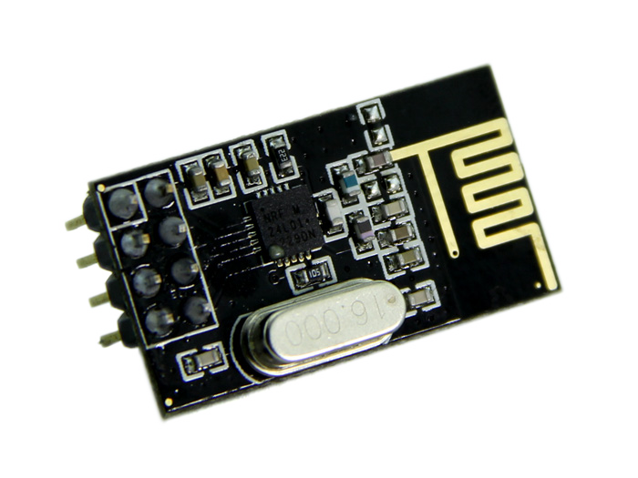
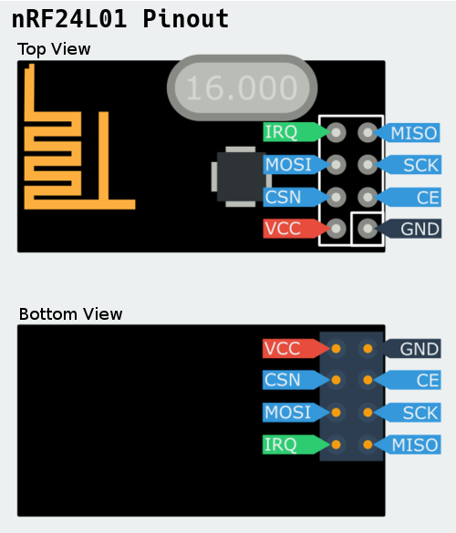

NRF24L01
- 2.4GHz Communicatie
- SPI Pheriperal
- Libraries beschikbaar

nRF24L01
- Aansluiten
- Zie pinout
- Library Installeren
- Tweemaal (RX &TX)

Basis Opstelling
Node 2
- Arduino Nano
- Ultrasone afstandsmeter
- nRF24L01
Opdracht
Schrijf een programma waarmee
- Je bouwt de basis opstelling
- Je draadloos een afstandsensor kan uitlezen.
- Je stuurt de data alleen maar door wanneer gevraagd
- Je maakt uitbreiding aan de basis opstellingen
- Opdracht is per 2
Uitbreidingen
Om de overige punten van de permanente evaluatie dient u volgende
uitbreidingen te maken aan de basisopdracht. De punten worden verdiend door
het tonen van werkende uitbreidingen.
- 7 segment display dat de afstand toont op node 1
- 7 segment display dat de afstand toont op node 2
- Moving average filter voor de afstandssensor
- Barebones Arduino op Node 2
- ......